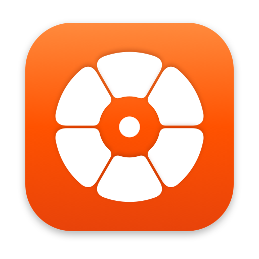
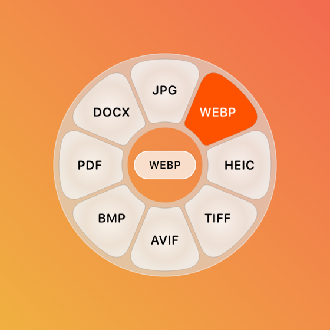
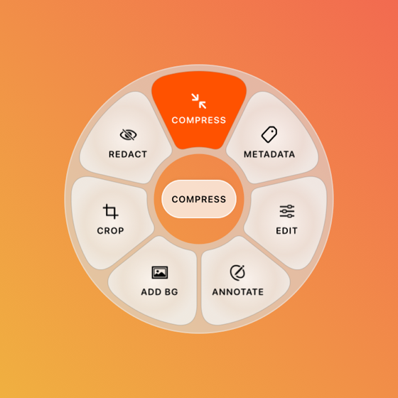
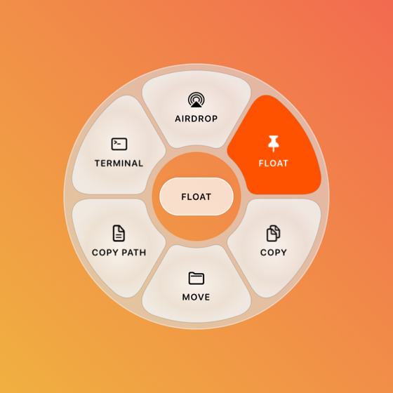

DropWheelDropWheel is a free Mac menu-bar app. While you drag any file, tap a key and a wheel appears at your pointer: convert it, edit it, compress it, AirDrop it. The result is saved beside the original.

Start dragging any file from Finder or your desktop, then tap one key. Move onto a petal and let go. Esc cancels.
275 conversions between 45 formats: photos, audio, video, PDF, Word, Pages, Markdown, slides, spreadsheets, subtitles and archives.

Compress, metadata, edit, annotate, crop and redact photos; trim, normalize and bleep audio; trim, crop, speed up, split and join video; organize and merge PDFs.

AirDrop, keep it on the Float shelf, copy, move, copy the path, or open the folder in Terminal. Works for folders too.
Two ways. Pick one.
Downloads the latest version, puts it in Applications and opens it — no security prompt. Run it again any time to update.
curl -fsSL https://manishvk514.github.io/dropwheel-app/install.sh | bash
Photos, PDFs and text work straight away. Video, audio, Office files and e-books use free, open-source engines (FFmpeg, Pandoc, LibreOffice, Calibre and friends) that DropWheel installs for you with Homebrew.
Yes. No trial, no limits, no account.
Any Mac with Apple silicon (M1 and later) or an Intel processor, running macOS 13 Ventura or later. It's one universal app.
Next to the original, named like “photo.webp” or “photo Compressed.jpg”. You can choose a fixed folder in Settings instead.
Download the latest DMG and replace the app, or run the one-line installer again.
Quit it from the menu bar icon, then drag DropWheel from Applications
to the Bin. To remove its engine helpers too, delete ~/Library/Application Support/DropWheel.